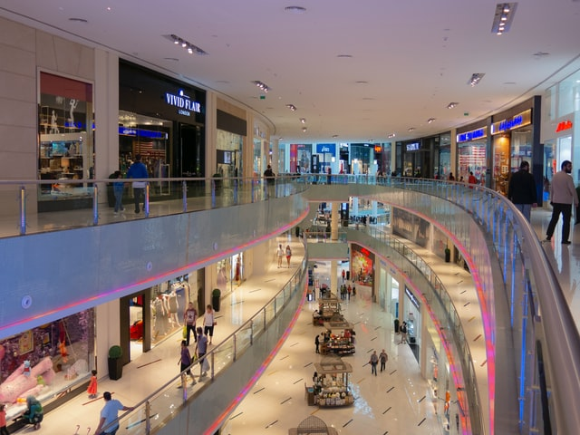

Because of its numerous extravagant malls, The two most famous are The Dubai Mall and Mall of the Emirates. The Dubai Mall is the largest mall in the world by total areaand is home to about 1000 retailers. It also features Dubai Aquarium, which is the world's largest aquarium holding, the world's largest candy store, an under water zoo, cinema, and so much more!

But what is really special are the dancing fountains and the Light shows of Burj Khalifa.
The Dubai Fountain is the world's largest choreographed fountain system.
It is located on a manmade Burj Khalifa Lake to be viewed from Dubai Mall's restuarants and walkways.
It shoots water up to 152 m (500 ft).
It is accompanied by a range of classical, contemporary Arabic and world renowned music. The fountain is animated with performances set to light and music.
The world's largest shopping mall is also connected to the world's tallest building, Burj Khalifa, and serves as an entrance to "At The Top" which takes you to the observatory at the top of Burj Khalifa for a spectacular view of the UAE and its neighbors!
Fun fact: you can actually see the sun set twice in Dubai! once on the ground by Dubai Mall, and another time by going to the top floor of Burj khalifa and you will see the sun set all over again due to the higher elevation.